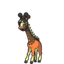

📖 英語版の図鑑説明
Now that the brain waves from the head and tail are synced up, the psychic power of this Pokémon is 10 times stronger than Girafarig’s.
日本語訳
頭と尻尾の脳波が同期したことで、エスパー能力はキリンリキの10倍に強化された。
📝 この図鑑文に出てくる英単語
| 英単語 | 意味 | 品詞 | レベル |
|---|---|---|---|
| brain | 脳 | 名詞 | 中3 |
| waves | 波(複数形) | 名詞 | 中2 |
| synced | 同期した | 形容詞 | 大学 |
| psychic | 超能力の | 形容詞 | 大学 |
| power | 力 | 名詞 | 中2 |
| stronger | より強い | 形容詞 | 中2 |
文法ポイント stronger than 〜 は比較級の文で「〜よりも…」という意味。2つのものを比べるときに使います。
📊 リキキリンの種族値
HP120
こうげき90
ぼうぎょ70
とくこう110
とくぼう70
すばやさ60
合計 520
❓ よくある質問
- リキキリンの英語名は？
- リキキリンの英語名は「Farigiraf」です。
- リキキリンは英語版の図鑑でどう説明されている？
- 「Now that the brain waves from the head and tail are synced up, the psychic power of this Pokémon is 10 times stronger than Girafarig’s.」と書かれています。日本語にすると「頭と尻尾の脳波が同期したことで、エスパー能力はキリンリキの10倍に強化された。」という意味です。
リキキリンは第9世代（パルデア地方）のポケモンです。第9世代（パルデア地方）の英語名一覧 →